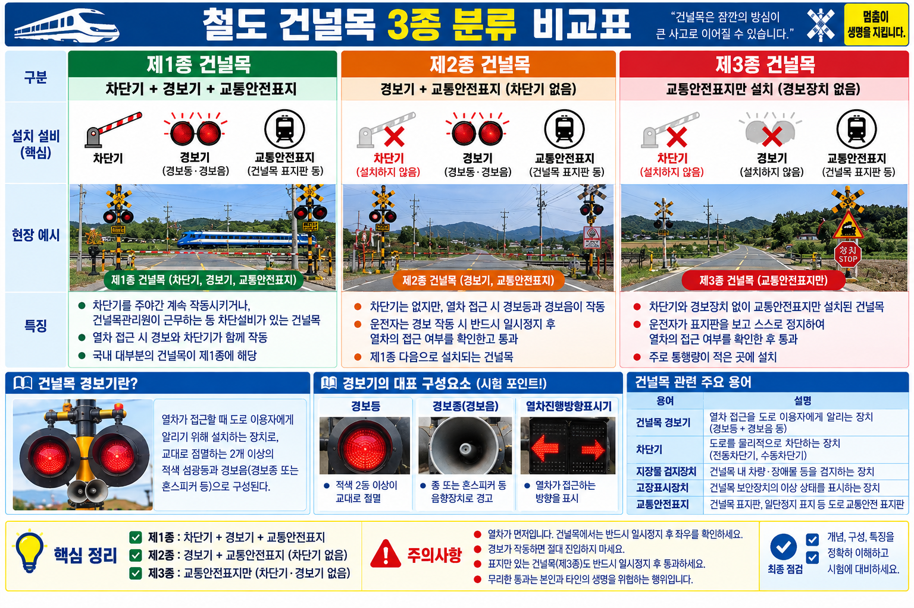

건널목(踏切, Level Crossing): 도로와 철도가 평면으로 교차하는 지점으로, 보안설비 수준에 따라 1종·2종·3종으로 분류한다.
종류별로 차단기·경보기·감시원(간수) 유무가 다르며, 시험에서 종별 구성 요소를 혼동하는 함정 선지가 자주 출제된다.
| 종별 | 차단기 | 경보기 | 감시원(간수) | 작동 방식 | 특징 |
|---|---|---|---|---|---|
| 1종 | O (있음) | O (있음) | 상주 | 주야간 작동 | 가장 높은 보안등급, 감시원 24시간 상주 |
| 2종 | O (있음) | O (있음) | 없음 (무인) | 자동 작동 | 차단기+경보기 자동, 무인 운영 |
| 3종 | 없음 | O (있음) | 없음 (무인) | 경보만 | 경보기만 설치, 무인 운영 |

경보장치: 열차 접근 시 도로 이용자에게 시각·청각 경고를 발신하는 설비. 건널목 경보등, 경보음 등으로 구성된다.
차단기(遮斷機): 열차 통과 중 도로 차량·보행자 진입을 차단하는 봉 형태의 설비. 1종·2종 건널목에 설치된다.
관제 방식: 1종은 감시원이 현장에서 직접 조작·감시하며, 2종·3종은 자동화 장치로 무인 운영한다.
호륜레일(護輪 Rail, Guard Rail): 건널목 구간에서 차륜을 안전하게 유도하기 위해 본선 레일 안쪽에 설치하는 레일.
직선구간 본선과의 간격: 65mm
안전레일(Safety Rail): 고가 구간에서 열차 탈선 시 피해를 최소화하기 위해 설치하는 레일.
본선과의 최대 간격: 180mm
| 구분 | 설치 위치 | 목적 | 본선과의 간격 |
|---|---|---|---|
| 호륜레일 | 건널목 구간 (본선 안쪽) | 차륜 유도, 탈선 방지 | 직선 65mm |
| 안전레일 | 고가부 구간 (본선 옆) | 탈선 시 피해 최소화 | 최대 180mm |
Q1 정답 ①
1종 건널목은 차단기·경보기를 모두 갖추고 감시원(간수)이 24시간 상주하여 주야간 직접 조작·감시한다. 가장 높은 보안등급의 건널목이다. ② 2종은 차단기·경보기 자동 작동, 무인. ③ 3종은 경보기만 설치, 무인. ④ 자동건널목은 별도 종류 구분이 아님.
Q2 정답 ③
3종 건널목은 경보기만 설치하고 감시원 없이 무인으로 운영한다. ① 1종은 차단기+경보기+감시원 상주이므로 오답. ② 2종은 차단기+경보기 자동이며 감시원 없음. ④ 2종은 차단기+경보기 모두 있음.
Q3 정답
호륜레일(護輪 Rail, Guard Rail) — 건널목 구간에서 차륜을 안전하게 유도하기 위해 본선 레일 안쪽에 설치하는 레일이다. 직선구간에서 본선과의 간격은 65mm이다. (안전레일은 고가부 탈선 피해 최소화용으로 최대 180mm — 혼동 주의)